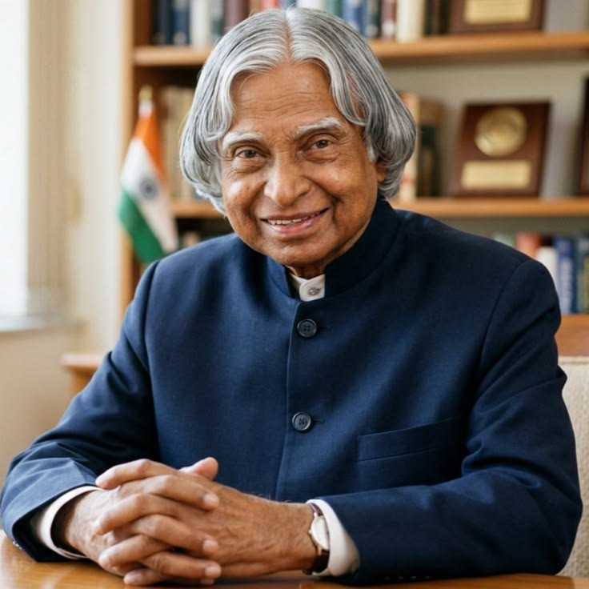

Dr. Avul Pakir Jainulabdeen Abdul Kalam remains one of India's most admired scientists and leaders. His remarkable journey from a humble background in Rameswaram to becoming the 11th President of India continues to inspire millions around the world.
Known as the "Missile Man of India," he played a crucial role in India's civilian space program and missile development. His contributions strengthened the country's scientific and defence capabilities while encouraging innovation among young minds.
Beyond science, Dr. Kalam believed that education and dreams could transform nations. He spent much of his life interacting with students, motivating them to think creatively and work toward a better future with honesty, dedication, and perseverance.
Even after serving as President, he continued teaching and sharing his knowledge until his final moments. His life remains a timeless example of humility, service, leadership, and lifelong learning.
Born in Rameswaram, Tamil Nadu.
Graduated in Aerospace Engineering and joined DRDO.
Led India's first successful Satellite Launch Vehicle.
Played a major role in India's nuclear tests.
Became the 11th President of India.
Passed away while inspiring students through a lecture.
"Dream, dream, dream. Dreams transform into thoughts and thoughts result in action."
— Dr. A. P. J. Abdul Kalam